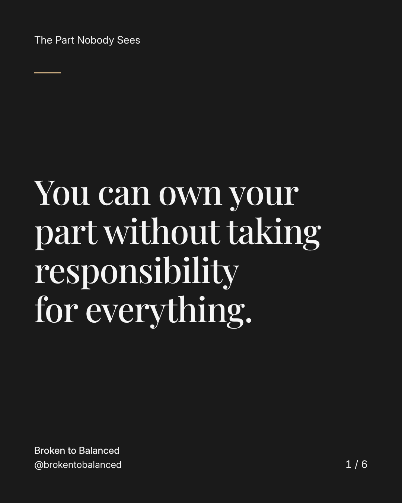
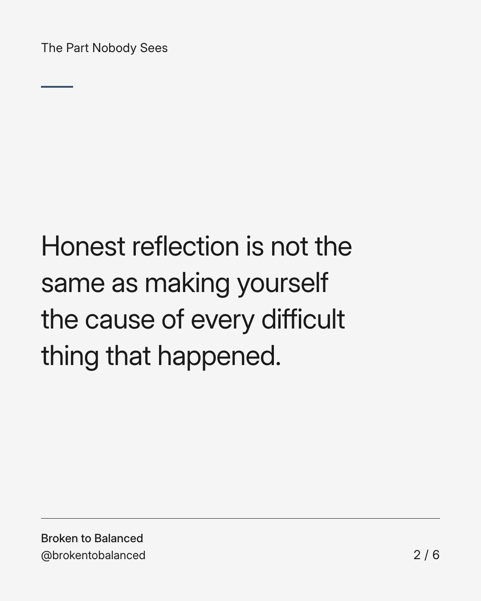
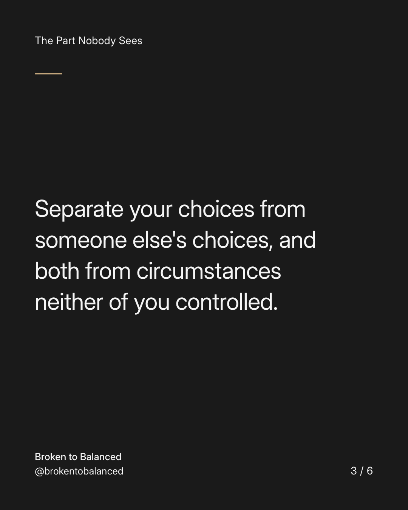
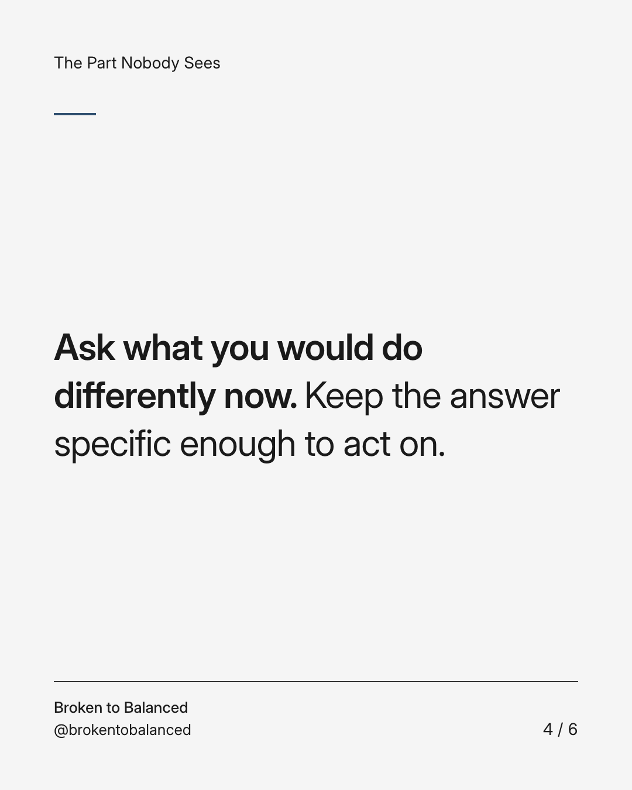
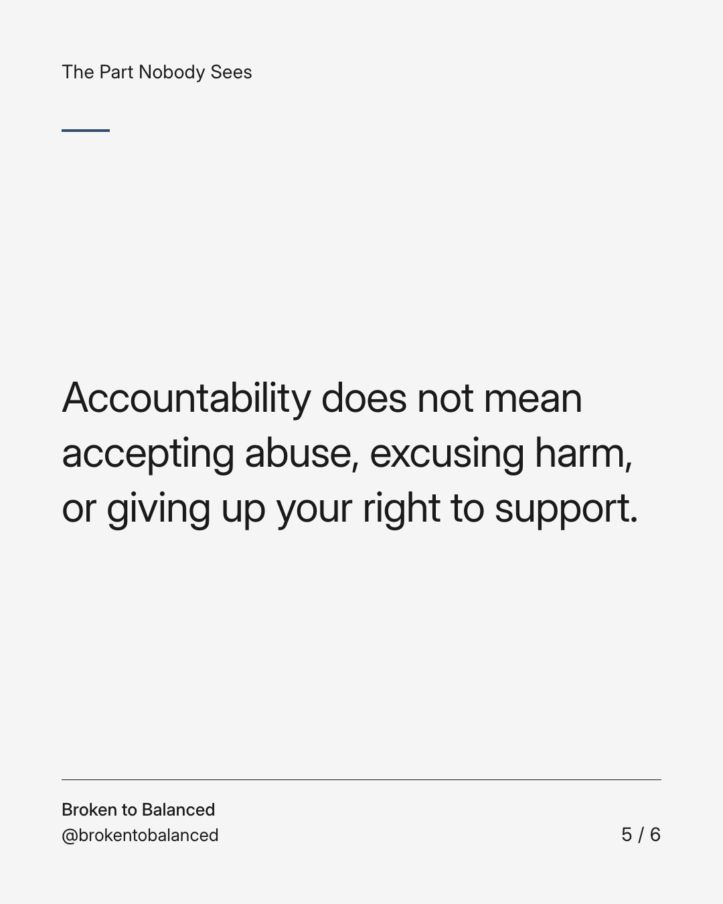
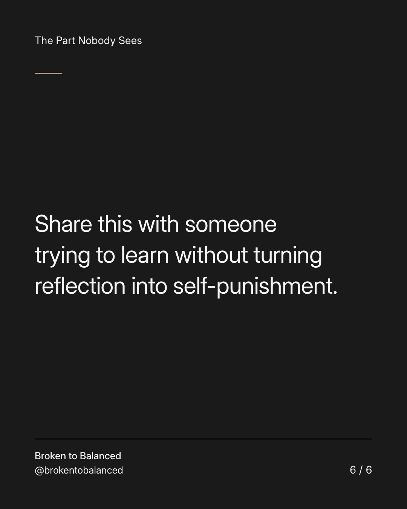

Exact text and accessibility text
You can own your part without taking responsibility for everything.
Slide 1 of 6. You can own your part without taking responsibility for everything.


Exact text and accessibility text
Honest reflection is not the same as making yourself the cause of every difficult thing that happened.
Slide 2 of 6. Honest reflection is not the same as making yourself the cause of every difficult thing that happened.


Exact text and accessibility text
Separate your choices from someone else's choices, and both from circumstances neither of you controlled.
Slide 3 of 6. Separate your choices from someone else's choices, and both from circumstances neither of you controlled.


Exact text and accessibility text
Ask what you would do differently now. Keep the answer specific enough to act on.
Slide 4 of 6. Ask what you would do differently now. Keep the answer specific enough to act on.


Exact text and accessibility text
Accountability does not mean accepting abuse, excusing harm, or giving up your right to support.
Slide 5 of 6. Accountability does not mean accepting abuse, excusing harm, or giving up your right to support.


Exact text and accessibility text
Share this with someone trying to learn without turning reflection into self-punishment.
Slide 6 of 6. Share this with someone trying to learn without turning reflection into self-punishment.
Exact caption
Plain-text fallback: select and copy the caption.